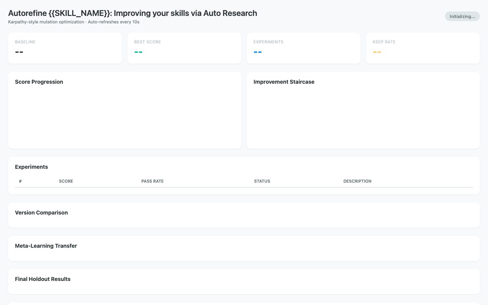
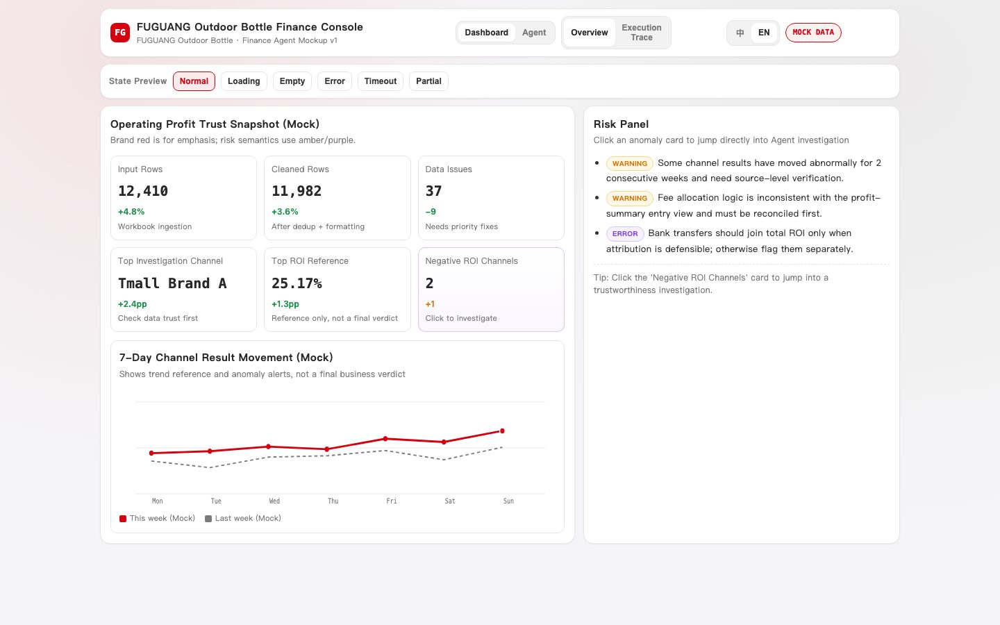
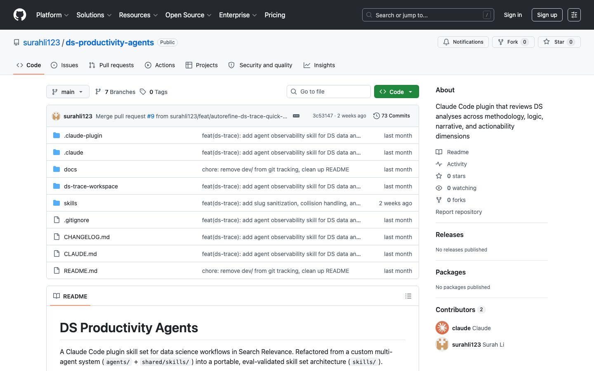

Search relevance, ranked and shipped.
I've spent a decade at Meta and Atlassian figuring out why search metrics move and what to do about it. Lately I build agent systems that automate the investigation work that used to take days.
(Atlassian SMA)
(Meta Facebook Search)
(open source)
(LLM outage prototype)


01About
I got into search because it sits at the intersection of everything I care about — user behavior, ranking systems, and measurable outcomes. At Meta, I worked across Facebook Search, Ads, and Reliability Infrastructure. The pattern I kept seeing: smart people spending days on structured legwork that could be automated.
At Atlassian, I built their first Search Metric Analysis Agent to solve exactly that — turning multi-day investigations into hours, with organic adoption across the org. Then I rebuilt the concept independently as an open-source project with 706 tests and a live demo, because I wanted to push the architecture further than a work project allows.
I think like a product manager but write code like an engineer. I care more about whether a metric actually reflects user satisfaction than whether the model scores well on a benchmark.
02Search Metric Analyzer
A multi-agent system that automates the hardest parts of search metric investigation.
When a search quality metric drops, finding the root cause is genuinely hard. It crosses multiple sub-systems, spans enterprise tenant segments, and requires recognizing co-movement patterns that separate real regressions from expected effects — like AI answer adoption lowering click-rate while improving quality.
SMA runs a four-stage pipeline — Understand, Hypothesize, Dispatch, Synthesize — with parallel sub-agents investigating each hypothesis against a routed knowledge base (playbooks, SEV archive, metric registry). The architecture is a deliberate hybrid: skill as interface, Python scripts as backbone. Prompts drive reasoning; code enforces the 14 quality gates (C1–C14) that make output reliable.
The newest iteration closes a Meta-SMA feedback loop on itself. Every investigation writes to a run registry. Retrospectives identify failure patterns. Auto-generated learnings inject back into the next run's context. The system gets sharper with use — 788 tests, 12 golden scenarios, regression gate in CI.
Python · DuckDB · PyYAML · skill-based orchestration. Open-source version →
03Other Work

AutoRefine
Eval-grounded skill improvement loop combining Karpathy's autoresearch with Hamel's Three Gulfs. Turns prompt-tweaking into a disciplined research pipeline — error analysis, judge validation, mutation loop.

Water Bottle Finance Analyzer
Enterprise finance analysis for a Chinese company's CEO. Built primarily with OpenAI Codex — bilingual (EN/中文), privacy guardrails, real users.

DS Productivity Agents
Plugin system for data science workflows — specialized skills for DS review and search domain knowledge, with a built-in eval framework.
04Contact
Let's talk. I'm looking for Senior DS roles at AI-first companies working on search, ranking, or agent systems. Based in Mountain View, CA · US Green Card holder — authorized to work, no visa sponsorship needed.